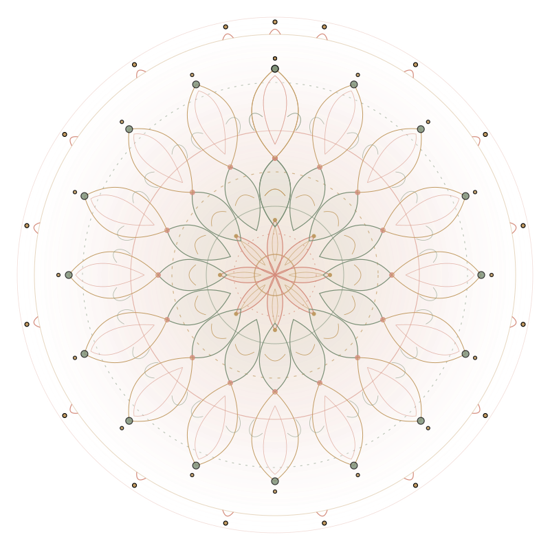

Endometriose muss nicht das Ende deiner Träume oder deiner Vitalität sein. Als Meisterin im Bereich Gesundheit bei Endometriose zeige ich dir den wissenschaftlich fundierten und zutiefst heilsamen Weg zurück in dein Wohlbefinden, deine hormonelle Balance und dein tiefes Körpervertrauen.

„Echtes Wissen über deinen Körper verwandelt Ohnmacht in unerschütterliche weibliche Stärke.“
Vielleicht kennst auch du das Gefühl, monatlich von überwältigenden Schmerzen überrollt zu werden, von Ärzt:innen vertröstet worden zu sein oder das Vertrauen in deinen eigenen Schoßraum verloren zu haben.
Ich bin hier, um dir zu sagen: Es gibt einen heilsamen Weg jenseits des reinen Durchhaltens. Als Meisterin und ganzheitliche Expertin im Bereich Endometriose-Gesundheit habe ich es mir zur Lebensaufgabe gemacht, Frauen aus dem Teufelskreis aus Entzündung, Schmerzgedächtnis und Erschöpfung zu befreien.
Mein Ansatz verbindet moderne Mikronährstoff- und Schmerzforschung mit sanfter Nervensystem-Regulation, antientzündlicher Ernährung und tiefem Körperwissen. Gemeinsam adressieren wir nicht nur Symptome, sondern die biologischen und emotionalen Wurzeln.
Heilung bei Endometriose geschieht niemals an einer einzelnen Stellschraube. Es ist das harmonische Zusammenspiel dieser 6 Schlüsselbereiche, das deinem Körper die Kraft zur Schmerzreduktion und Erneuerung schenkt.
Antientzündliche Ernährung, die das Immunsystem beruhigt, die Leber beim Östrogenabbau unterstützt und die Darmgesundheit stärkt.
Mehr erfahrenSanfte, zyklusgerechte Mobilisation und Beckenboden-Entlastung statt anstrengendem Übertraining, um Stresshormone zu senken.
Mehr erfahrenSchlafqualität, Wärmerituale (Rizinusöl-Packungen) und die bewusste Erlaubnis zur Pause als aktive Heilmedizin bei chronischen Schmerzen.
Mehr erfahrenGezielte Mikronährstofftherapie: Magnesium, Omega-3, PEA, Vitamin D3/K2 und Antioxidantien zur Dämpfung der Entzündungskaskade.
Mehr erfahrenVagusnerv-Stimulation und Entstressung: Das Schmerzgedächtnis neu codieren und den Körper aus dem chronischen Alarmzustand holen.
Mehr erfahrenWieder in Liebe mit dem eigenen Schoßraum treten: Sanfte Selbstmassage, Akupressur und das Lösen von Schutzverspannungen.
Mehr erfahrenEndometriose ist eine chronisch-entzündliche, östrogensensitive Erkrankung. Mit den richtigen Nährstoffen entlastest du das Immunsystem und hilfst deiner Leber, überschüssiges Östrogen effektiv abzubauen.
Kreuzblütler (Brokkoli, Blumenkohl, Rosenkohl enthalten DIM für die Leber), dunkles Blattgrün, Leinsamen (Lignane zur Hormonmodulation), Beeren und wilder Lachs oder Algenöl (Omega 3).
Raffiniertes Weizenmehl & Zucker (triggern Entzündungszytokine), verarbeitetes rotes Fleisch, Transfette, Kuhmilchprodukte (A1-Kasein) und Alkohol (belastet die Leberentgiftung).
Erwärme 250ml Hafer- oder Mandelmilch mit 1 TL Kurkuma, 1/2 TL Ceylon-Zimt, einer Prise schwarzem Pfeffer, 1 TL Kokosöl und etwas Honig. Lindert Entzündungen und wärmt den Schoßraum von innen.
Viele Frauen mit Endometriose neigen aus Schmerzangst dazu, den Beckenboden und den Psoas-Muskel („Seelenmuskel“) permanent unbewusst anzuspannen. Intensives HIIT-Training treibt zudem das Stresshormon Cortisol hoch und kann Schübe triggern.
Bei Endometriose ist der Beckenboden oft chronisch hyperton (überanspannt). Das Ziel ist nicht Anspannen, sondern das bewusste, heilsame Loslassen und Weichwerden.
Liegender Schmetterling (Supta Baddha Konasana): Öffnet sanft das Becken und entspannt die Leisten.
Unterstützte Kindeshaltung (Balasana): Beruhigt den Vagusnerv und dehnt den unteren Rücken.
Beine an der Wand (Viparita Karani): Fördert den venösen Rückfluss aus dem Becken.
An schlechten Tagen: Sanfte Beckenkreise im Liegen oder auf dem Pezziball. An guten Tagen: Spaziergänge im Grünen, Schwimmen oder sanftes Pilates.
„Bewege dich nicht, um Kalorien zu verbrennen, sondern um Sauerstoff und Liebe in dein Becken zu leiten.“
Kein Zwang, kein Leistungsdruck. Dein Körper führt die Regie.
Chronischer Schmerz erschöpft die Nebennieren und das zentrale Nervensystem. Echte Regeneration ist kein Luxus, sondern die biologische Grundvoraussetzung dafür, dass Gewebe heilen und Entzündungen abklingen können.
Tränke ein Bio-Flanelltuch mit kaltgepresstem Rizinusöl, lege es auf den Unterbauch oder die Leber, wickle es mit einem Baumwolltuch ein und lege eine Wärmflasche auf. Fördert die Lymphzirkulation und löst Gewebeverklebungen (nicht während der Menstruation).
Ein warmes Vollbad mit Meersalz und Magnesiumflocken entspannt verkrampfte Faszien und zieht Säuren über die Haut ab. Moorwärmekissen schenken anhaltende Tiefenwärme.
Grenzen setzen schützt dein Immunsystem vor Cortisol-Spitzen. Ein Nein zu überfordernden Pflichten ist ein lebensbejahendes Ja zu deinem Körper.
Melatonin ist nicht nur das Schlafhormon, sondern eines der stärksten körpereigenen Antioxidantien gegen Endometrioseherde.
Wissenschaftliche Studien zeigen, dass Frauen mit Endometriose einen erhöhten Bedarf an entzündungshemmenden und krampflösenden Mikronährstoffen haben. Hier findest du die erprobtesten Schlüsselsubstanzen:
| Nährstoff | Wirkung im Körper | Typische Nahrungsmittel | Praxis-Tipp |
|---|---|---|---|
| Magnesium (Bisglycinat) | Entspannt die glatte Uterusmuskulatur, senkt Prostaglandine & Krämpfe | Kürbiskerne, Kakao, Mandeln | Bisglycinat wird besonders magenfreundlich resorbiert |
| Omega-3 (EPA & DHA) | Stoppt die Bildung entzündungsfördernder Botenstoffe (COX-2) | Wildlachs, Algenöl, Chiasamen | Auf hohe EPA-Anteile achten; pflanzliches Algenöl wählen |
| Vitamin D3 & K2 | Moduliert das Immunsystem und senkt Schmerzüberempfindlichkeit | Sonnenlicht, Eigelb, Pilze | Blutwert (25-OH-D3) regelmäßig bestimmen lassen |
| PEA (Palmitoylethanolamid) | Beruhigt überaktive Mastzellen im Beckenraum & Schmerzrezeptoren | Körpereigenes Lipid (als Reinsubstanz) | Hervorragend bei chronischem neuropathischem Schmerz |
| Zink & Selen | Unterstützt die zelluläre Wundheilung und schützt vor oxidativem Stress | Paranüsse, Sonnenblumenkerne | Wichtig für Leber und Schilddrüsenfunktion |
| Kurkumin & Quercetin | Natürliche COX-2-Hemmer, hemmen Neubildung von Blutgefäßen (Angiogenese) | Kurkumawurzel, Zwiebeln, Kapern | Immer mit etwas Fett und Pfeffer (Piperin) kombinieren |
*Hinweis: Nahrungsergänzungen sollten individuell abgestimmt werden. In meiner Meister-Begleitung analysieren wir deinen individuellen Bedarf.
Wer über Jahre Schmerzen erleidet, entwickelt eine sogenannte *zentrale Sensibilisierung*: Das Nervensystem schlägt bereits bei kleinsten Reizen Alarm. Über den Vagusnerv – den Hauptnerv unseres Ruhesystems – können wir dem Gehirn signalisieren: „Ich bin in Sicherheit.“
Der Vagusnerv hemmt direkt die Freisetzung von Entzündungsbotenstoffen (cholinerger antientzündlicher Signalweg) und beruhigt Herzschlag sowie Beckendurchblutung.
Tiere schütteln nach Gefahr den Schreck aus dem Körper. 2 Minuten sanftes Ausschütteln der Arme, Beine und des Beckens am Morgen entlädt gespeicherte Schock-Spannung.
Sanftes Massieren der Ohrmuschel (Concha) mit kreisenden Bewegungen aktiviert direkt Äste des Nervus Vagus und senkt den Puls innerhalb weniger Minuten.
Mit gezielten Übungen holen wir dich sanft Schritt für Schritt zurück in die heilsame grüne Zone.
Weil der Unterbauch so oft Schmerzquelle war, ziehen sich viele Betroffene emotional aus ihrem Becken zurück. Doch genau dort liegt auch die Quelle deiner Weiblichkeit, Intuition und Schöpferkraft.
Mit warmem Mandel- oder Johanniskrautöl im Uhrzeigersinn um den Nabel kreisen und mit sanften Streichungen von den Beckenkämmen nach innen gleiten. Löst Faszienverklebungen und signalisiert Liebe.
Milz 6 (Sanyinjiao): 4 Fingerbreit über dem Innenknöchel – der Meisterpunkt für Menstruationskrämpfe und gynäkologische Beschwerden.
Leber 3 (Taichong): Zwischen großem und zweitem Zeh – löst Stagnation und schenkt Entspannung.
Beobachte deinen Körper wertfrei: Wann brauche ich mehr Schlaf? Welche Tage schenken mir Kraft? Lerne die Signale zu lesen, bevor dein Körper schreien muss.
„Mein Schoßraum ist kein Schmerzfeld, sondern ein heiliger Ort des Lebens, der Regeneration und der Würde.“
Wähle deine heilsame Atemtechnik, um das Nervensystem in die Ruhe zu führen, die Schmerzwahrnehmung im Gehirn zu dämpfen und den Beckenboden sanft zu entlasten.
Der heilsame 4-4-6 Rhythmus signalisiert deinem Beckenboden und deinem Vagusnerv: „Du bist sicher.“ Die verlängerte Ausatmung senkt nachweislich die Schmerzwahrnehmung im Gehirn.
Wenn der Schmerz unerwartet zuschlägt: Vier bewährte Schritte, um den Krampfteufelskreis zu durchbrechen und deinen Körper sofort zu stabilisieren.
Feuchte Wärme (Moor- oder Kirschkernkissen) auf den Unterbauch und in die Kniekehlen. Gehe in die Seitenlage mit einem Kissen zwischen den Knien.
Sanft durch die Nase einatmen und mit leicht geöffneten Lippen (wie durch einen Strohhalm) ganz lang ausatmen. Löst den Krampfreflex des Zwerchfells.
Drücke mit dem Daumen 4 Fingerbreit oberhalb deines Innenknöchels für 60 bis 90 Sekunden sanft, aber bestimmt. Lindert Uterus-Kontraktionen.
Sage alle Termine ab, ohne dich schuldig zu fühlen. Schließe die Vorhänge und lasse dich von weichen Decken tragen. Dein Körper leistet gerade Schwerstarbeit.
Nein. Eine ganzheitliche Begleitung versteht sich als partnerschaftliche Ergänzung und kraftvolle Stärkung deiner Selbstheilungskräfte, nicht als Ersatz für Gynäkolog:innen oder Endometriosezentren. Wir arbeiten Hand in Hand mit deiner medizinischen Diagnostik.
Erste Erleichterung durch Nervensystem-Regulation und Vagus-Atmung spürst du oft sofort. Tiefe Veränderungen bei Entzündungsmarkern, Darmgesundheit und hormoneller Balance zeigen sich erfahrungsgemäß nach 2 bis 3 vollständigen Monatszyklen.
Ganz im Gegenteil! Radikale Verbote erzeugen nur Stress, der wiederum Schmerzen schürt. Wir integrieren schrittweise bereichernde, antientzündliche Kraftpakete in deinen gewohnten Speiseplan – voller Genuss und Leichtigkeit.
Als Meisterin im Bereich Gesundheit bei Endometriose betrachte ich dich als ganzheitliches Individuum. Du erhältst keine vorgefertigten Standardpläne, sondern ein auf deinen Zyklus, deine Lebensumstände und deine Körpersignale maßgeschneidertes Mentoring mit Herz und wissenschaftlicher Tiefe.